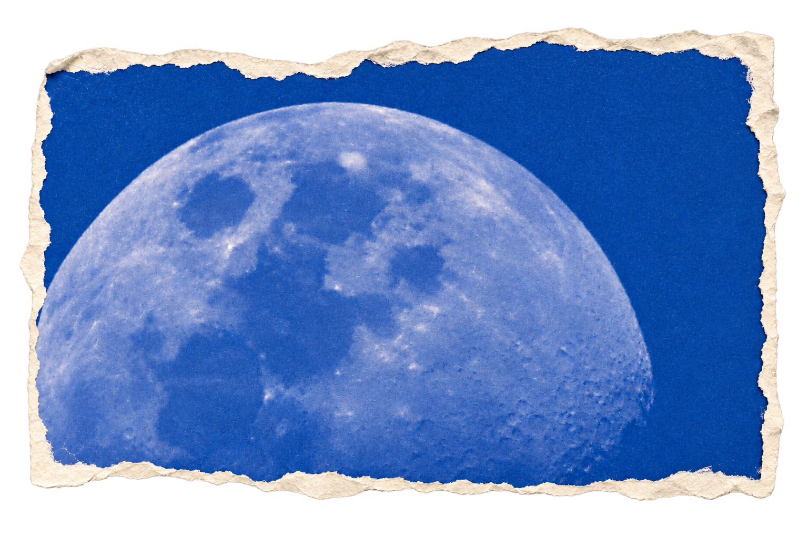
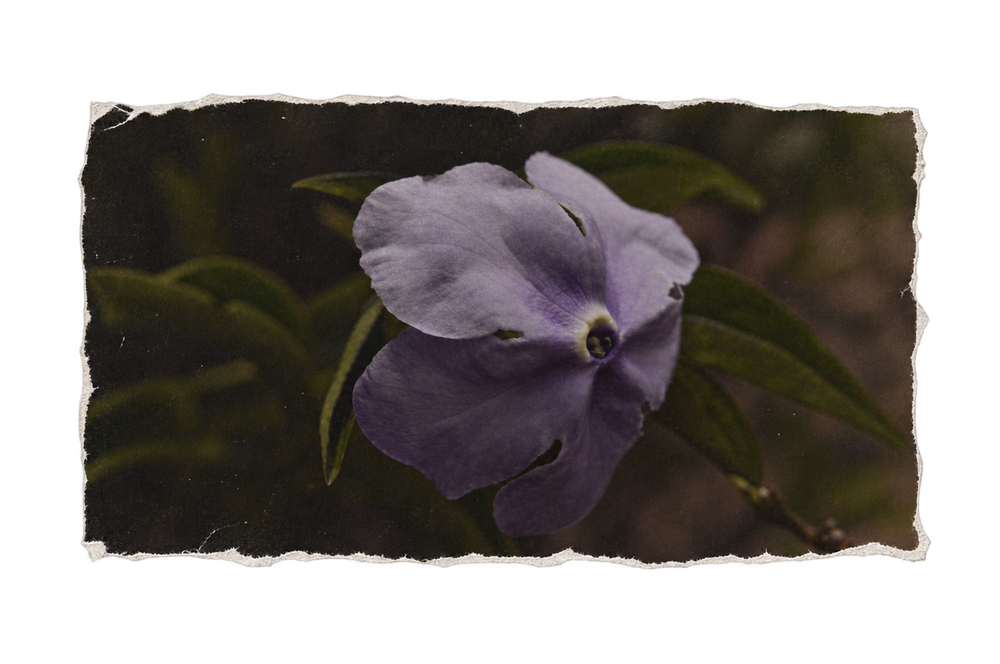
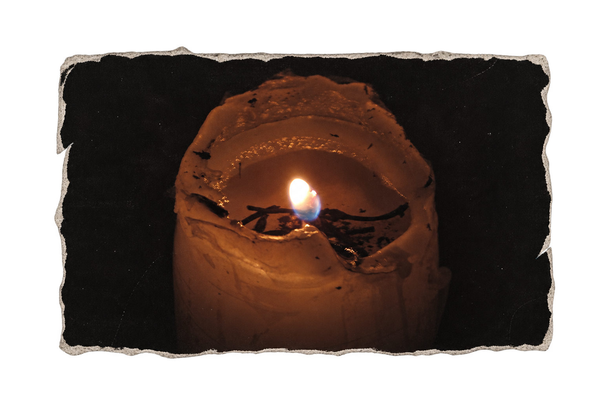

colecciono
lo que me
hace detenerme.
pequeños
mundos
posibles.
Portafolio
VALENTINA MORENO
DIRECCIÓN CREATIVA
DISEÑO · FOTOGRAFÍA · ILUSTRACIÓN
[ entrar ]
un archivo en construcción
sobre las cosas que me inspiran,
las preguntas que me habitan
y los mundos que quiero crear.
ideas que florecen en el caos.